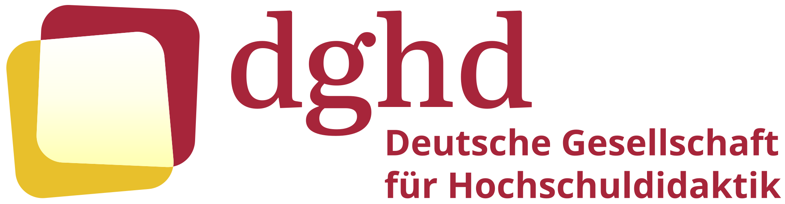
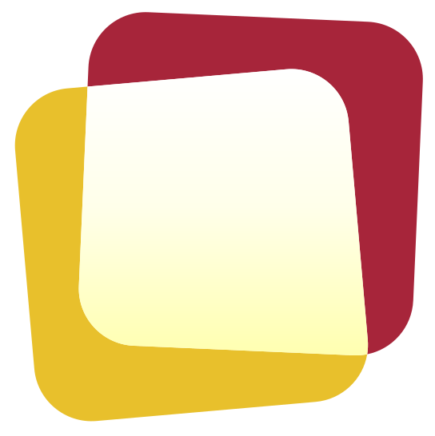

Mitglied werdenDie Fachgesellschaft für alle, die Lehre an Hochschulen erforschen, gestalten und begleiten. Wonach suchen Sie?
Hochschuldidaktische Forschung stärken und vernetzen.
BuchreiheDie Publikationsreihe der dghd.
Themen-DossierBeiträge und Termine der Themenreihe.
NachwuchsFür alle, die in der Hochschuldidaktik promovieren.
CallsWo sich Forschung aus dem Feld zeigen lässt.
Hochschuldidaktische Perspektiven auf Gegenwart und Zukunft akademischer Bildung.
Zum Call for PapersAusschreibungen aus Hochschuldidaktik und Lehrentwicklung.
QualitätWas gute hochschuldidaktische Arbeit ausmacht.
KommissionHochschuldidaktische Angebote akkreditieren lassen.
KommissionWeiterbildung im Feld, Forum Weiterbildung.
Verzeichnis126 Einrichtungen im deutschsprachigen Raum.
Impulse, Standards und Veranstaltungen für die eigene Lehre.
Forschungskommission, Publikationen, Nachwuchs und Calls.
Weiterbildung, Akkreditierung, Netzwerke und Stellen.
Qualität, Akkreditierung und Austausch mit anderen Zentren.

Als Mitglied bringen Sie Forschung und Praxis zusammen: in Arbeitsgruppen, Netzwerken und auf der Fachtagung.